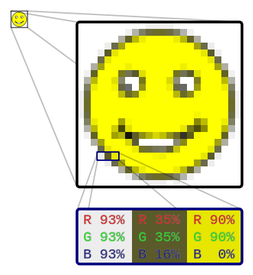
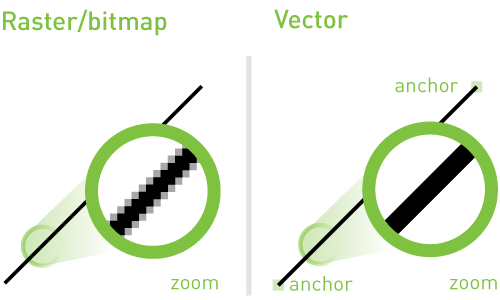

Universidade Estadual do Maranhão
Bacharelado em Engenharia de Computação
504 - Computação Gráfica
Introdução à Computação Gráfica
Definição:
Conjunto de ferramentas e técnicas para converter dados para ou de um dispositivo gráfico através do computador
Origem:
A partir da 1950. O primeiro computador a possuir recursos gráficos de visualização de dados numéricos foi o Whirlwind I, desenvolvido no MIT.
Em 1959, surge o termo Computer Graphics, criado por Verne Hudson.
Breve histórico
1965: A General Motors desenvolve o precursor dos programas CAD. No fim da década de 1960, praticamente toda a indústria automobilística e aerospacial utilizava softwares CAD.
Na década de 70, muitos pesquisadores desenvolveram algoritmos e técnicas utilizadas até hoje em computação
gráfica.
A partir de 1980, surgem novas técnicas de iluminação, como o Ray-tracing, e a radiosidade em 1984.
A década de 1990 consolidou a computação gráfica por sua aplicação para criação de efeitos de cinema, como
os do filme Jurassic Park.
O OpenGL surge em 1992.
Fotorrealismo, personagens computadorizados e o primeiro longa 3D (Toy Story) em 1995.
A NVIDIA lança as primeiras placas gráficas para PC em 1999.
Aplicações da Computação Gráfica
A computação gráfica tem aplicação nos mais variados campos
Medicina
Arquitetura
Engenharia
Geografia
Astronomia
TV, Cinema, Marketing
Games
E muitos outros...
Dispositivos Gráficos de Entrada
Teclado
Mouse
Joysticks
Mesa digitalizadora
Digitalizador tridimensional
Capacetes de Realidade Virtual
Dispositivos Gráficos de Saída
Impressoras
Plotters
Monitores
Head Mounted Displays
Placas de Vídeo
Representação Matricial de Imagens
Raster
A imagem contém a descrição de cada pixel: posição e cores.
A imagem é representada em uma matriz bidimensional, onde a posição de cada elemento na matriz é associada ao pixel com as informações de cores correspondentes.
Raster

Detalhe de imagem matricial
Raster

Raster
Formatos comuns de imagem matricial.
JPEG
GIF
BMP
PNG
TIFF
Representação Vetorial de Imagens
Imagem Vetorial
A imagem é descrita por vetores.
Usa primitivas geométricas como pontos, linhas, curvas e polígonos para representar as imagens. As primitivas são determinadas por funções matemáticas. As imagens vetoriais não sofrem de problemas de perda de definição ao serem ampliadas, pois as funções matemáticas se adequam bem às tranformações de escala. Outra vantagem é o fato de ocuparem menos espaço.
Comparação: Matricial vs Vetorial
Imagem Vetorial
Formatos comuns de imagem vetorial.
SVG
CDR
AI
ESS
OpenGL
OpenGL
OpenGL é uma API gráfica e não uma plataforma ou linguagem de programação em si.
Foi desenvolvida a partir de 1991 como um padrão aberto pela SGI. Rapidamente se tornou
padrão no mercado e hoje é adotada por todas as empresas que fabricam hardware gráfico.
Escrita originalmente em C, o OpenGL oferece centenas de funções que permitem o acesso a
praticamente todos os recursos do hardware gráfico.
Configuração do OpenGL ( C/C++ )
A configuração do OpenGL é simples. Um tutorial de configuração para ambientes Windows (Visual Studio)
e também ambientes Linux está disponível em:
https://github.com/LabCGUema/Basico/
As principais bibliotecas utilizadas nos exemplos em C++ são:
GLEW:
Carrega automáticamente extensões OpenGL
http://glew.sourceforge.net/
GLFW:
Criação e gerenciamento de janelas e contextos OpenGL
http://www.glfw.org/
FreeGlut:
Implementação Open Source da biblioteca Glut. Permite que as aplicações
OpenGL sejam portáveis entre sistemas operacionais diferentes
http://freeglut.sourceforge.net/
OpenGL
As funções OpenGL foram escritas em C, mas há diversos bindings para
diversas outras linguagens de programação como Java, C# e Python. Uma lista completa
das linguagens com suporte a desenvolvimento baseado em OpenGL está disponível em:
https://www.opengl.org/wiki/Language_bindings
É importante frisar que tais linguagens acabam em última instância fazendo chamadas às funções C do OpenGL.
Bibliotecas Multimídias / Toolkits que utilizam OpenGL ( C / C++)
São utilizadas para desenvolvimento de jogos, simulações e criação de GUI's:
Allegro 5:
Focada no desenvolvimento de jogos
http://liballeg.org/
SDL:
Simple DirectMedia Layer - Voltada para o desenvolvimento de aplicações multimídia
https://www.libsdl.org/
SFML: Também dedicada ao desenvolvimento de aplicações multimídia http://www.sfml-dev.org/
Qt: Desenvolvimento de GUI's. Faz uso intenso de OpenGL. https://www.qt.io/
wxWidgets:
Assim como o Qt, voltada para a criação de Interfaces Gráficas para aplicações
http://wxwidgets.org/
Recursos
Além das documentações oficiais das bibliotecas apresentadas, você pode encontrar materiais úteis
como códigos de exemplo e tutoriais nos endereços web listados abaixo:
Perfil no Github do Laboratório de Computação Gráfica Aplicada
Bacharelado em Engenharia de Computação - Universidade Estadual do Maranhão
https://github.com/LabCGUema
Learn OpenGL
Ensina passo a passo a usar recursos básicos e avançados do OpenGL
http://learnopengl.com/
Referências
Azevedo, Eduardo; Conci, Aura. Computação Gráfica: Geração de Imagens.
Elsevier; Rio de Janeiro, 2003
Referências
Azevedo, Eduardo; Conci, Aura; Leta, Fabiana R.. Computação Gráfica: Geração de Imagens.
Elsevier; Rio de Janeiro, 2008